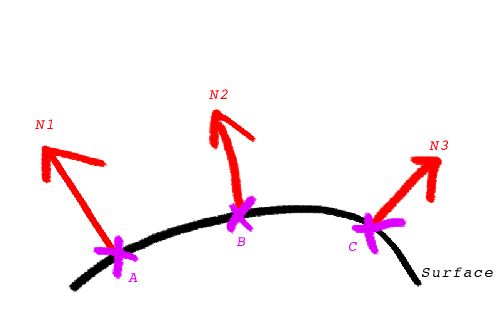
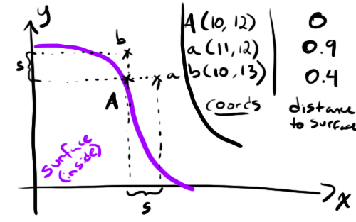
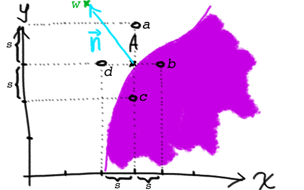

In this I'll be covering a very basic lighting model and animating the light source position. Let's pick up where we left off at the end of Sphere Tracing 101 with the following shader: https://www.shadertoy.com/view/4tsXzf.
So far, we've only been returning a boolean to indicate whether or not our ray had hit the sphere. In order to figure out how the light is going to interact with the sphere's surface, we're going to need more information about the surface at that point. Enter the surface normal! The normal is a vector "pointing" in the direction that the surface is facing at a specific point in space. In other words, the surface normal is a vector perpendicular to the surface at a given point.
In the (beautifully drawn with my laptop's trackpad, no doubt) image below normals N1, N2 and N3 are the surface normals at points A, B and C respectively.
So, how do we calculate these normals?
For our current universe containing only a sphere, we could use the intersection point's position in 3D space to be interpreted as a vector. This will work because our sphere is centred on the origin at (0,0,0) but will break for any other type of world. We'll need a more general solution to this problem.
The computation used here might not seem obvious from the onset, so we'll describe a solution to the same problem in a 2D space first.
Whaaaaaaaat is this about? The purple shape is our 2D surface and A is the point of intersection at (Ax, Ay) we're trying to find the normal for. We've then taken a unit s and created four new points a, b, c and d by shifting A by either +s or -s along either the x or the y axis.
Let's call our distance function with those new points as input and see what we get...
Ah, interesting. The two points that were inside the surface return negative results while the two outside return a positive value. Let's take the weighed average w of these four points using their distance value as weights. We get:
If we add w to the previous 2D graph, we get something that looks an awful lot like the surface normal we've been after! In fact, the surface normal at A is vector n, which is equal to (w-A)
The idea is the same for a surface normal in 3D space: take the point of intersection, generate 6 new points by shifting by +s or -s along the x, y or z axes, then compute their weighed average w using their distance from the surface as weight and finally calculate n=(w-A). Easymode :)
Let's write out the corresponding code.
vec3 computeSurfaceNormal(vec3 p, float s){
vec3 a = p + vec3(-s, 0, 0);
vec3 b = p + vec3( s, 0, 0);
vec3 c = p + vec3( 0, -s, 0);
vec3 d = p + vec3( 0, s, 0);
vec3 e = p + vec3( 0, 0, -s);
vec3 f = p + vec3( 0, 0, s);
return
normalize(
distanceToNearestSurface(a)*(a-p) +
distanceToNearestSurface(b)*(b-p) +
distanceToNearestSurface(c)*(c-p) +
distanceToNearestSurface(d)*(d-p) +
distanceToNearestSurface(e)*(e-p) +
distanceToNearestSurface(f)*(f-p));
}Now, to test this we'll make a few changes to the world intersection code so it assigns pixel colour based on the normal. Changes are in bold.
vec4 intersectWithWorld(vec3 p, vec3 dir){
float dist = 0.0;
for(int i = 0; i < 20; i++){
float nearest = distanceToNearestSurface(p + dir*dist);
if(nearest < 0.01){
return vec4((vec3(1.0)+computeSurfaceNormal(p+dir*dist, 0.1))/2.0, 1.0);
}
dist += nearest;
}
return vec4(0.0);
}
void mainImage( out vec4 fragColor, in vec2 fragCoord )
{
vec2 uv = fragCoord/iResolution.xy;
// generate the ray for this pixel
vec2 camUV = uv*2.0 - vec2(1.0, 1.0);
vec3 nright = normalize(cross(cameraUp, cameraDirection));
vec3 pixel = cameraPosition + cameraDirection + nright*camUV.x*ulen + cameraUp*camUV.y*vlen;
vec3 rayDirection = normalize(pixel - cameraPosition);
fragColor = intersectWithWorld(cameraPosition, rayDirection);
}Awesome, we've got functional normals for our world! In case you're feeling unconvinced that this demonstrates reasonable normals, feel free to take a moment to think about the direction various parts of the sphere are "pointing" towards. If I take the very top of the sphere for instance, the colour there is a very pure green. When assigning the colour to the pixel when we generated this image, the red field mapped to the x axis, the green to the y and blue to the z - so at the very top of the sphere we have a normal that points straight up. Seems correct.
Let's simulate some lights now, shall we? For this we'll use a stripped down version of the Lambertian model. It goes a little something like this...
Intensity = dot(L, N)
L is the vector pointing from the surface to the light and N is the surface normal. Those two are enough to compute how much light gets back to our eye from that point on the surface. Let's try plugging this in to see what it looks like.
vec4 computeLambert(vec3 p, vec3 n, vec3 l){
return vec4(vec3(dot(l-p, n)/150.0), 1.0);
}
vec4 intersectWithWorld(vec3 p, vec3 dir){
float dist = 0.0;
for(int i = 0; i < 20; i++){
float nearest = distanceToNearestSurface(p + dir*dist);
if(nearest < 0.01){
vec3 hit = p+dir*dist;
return computeLambert(hit, computeSurfaceNormal(hit, 0.1), vec3(100.0, 30.0, 0.0));
}
dist += nearest;
}
return vec4(0.0);
}This seems a little boring so let's make the light orbit around the sphere.
vec4 intersectWithWorld(vec3 p, vec3 dir){
float dist = 0.0;
for(int i = 0; i < 20; i++){
float nearest = distanceToNearestSurface(p + dir*dist);
if(nearest < 0.01){
vec3 hit = p+dir*dist;
vec3 light = vec3(100.0*sin(iGlobalTime),
30.0*cos(iGlobalTime),
50.0*cos(iGlobalTime));
return computeLambert(hit, computeSurfaceNormal(hit, 0.1), light);
}
dist += nearest;
}
return vec4(0.0);
}And here's what we've got now, with the animation.
The lighting model used here was kept to a bare minimum in terms of complexity and is definitely a far shot from the prettiest one. I may delve into more lighting models in future posts, but for the next few I'll most likely be covering new geometric shapes and textures, so if you're the impatient type I'd recommend you look up the Blinn-Phong model and try to implement that :)
You can find the Sphere Tracing 102 shader here: https://www.shadertoy.com/view/4ljXRh